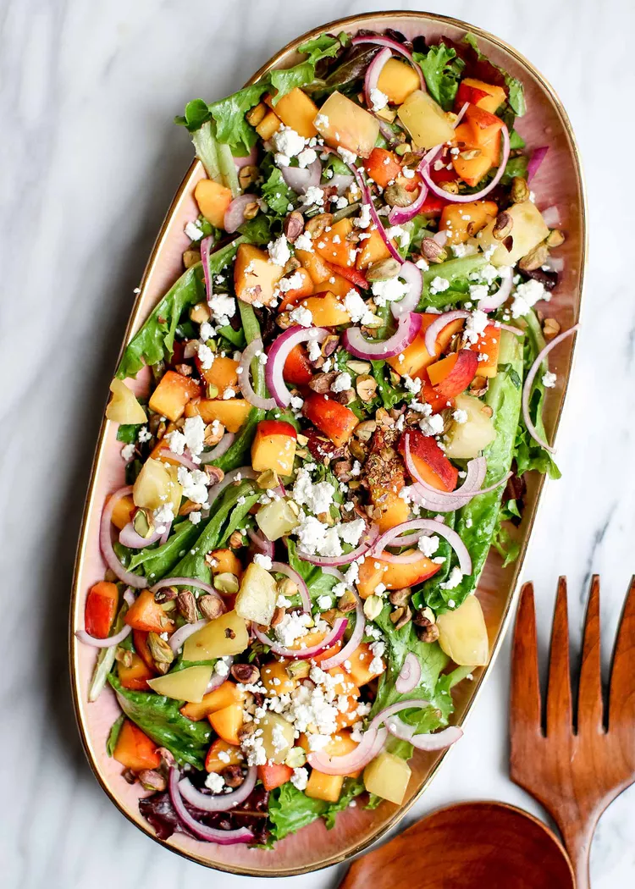

Salad

This salad couldn’t be simpler, and can be easily assembled almost entirely using ingredients you can find at your local farmers’ market. I bought everything except the pistachios, goat cheese, olive oil, and vinegar at mine—though you might be lucky enough to find everything at yours!
As with almost anything else that showcases local and seasonal vegetables, you don’t have to do a whole lot to make things taste delicious. The less, the better.
Ingredients
- 1 cup mixed greens
- 1 cup baby spinach leaves
- ⅓ cup cucumber, sliced
- ⅓ cup carrot, shredded
- ⅓ cup red bell pepper, diced
- 3oz sliced baked or grilled chicken, tofu, salmon or 1 hard-boiled egg
- ¼ cup sundried tomatoes, roughly chopped
- 1 ½ tbsp pepitas (pumpkin seeds)
- 2 tbsp basil leaves, chopped
- ⅓ cup baked chickpeas
Steps
- Put all your mixed greens and spinach in a large bowl.
- Add in the cucumbers, carrots, bell pepper and tomatoes.
- Put in the protein of your choice.
- Top with the tasty toppings, which are your pumpkin seeds, basil leaves and chickpeas.
- In a separate bowl, place all dressing ingredients and whisk until combined.
- Toss all salad ingredients in a medium bowl.
- Dress and plate your salad.*